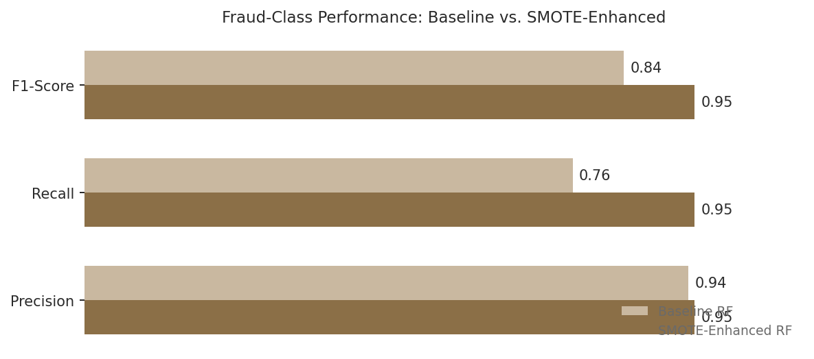
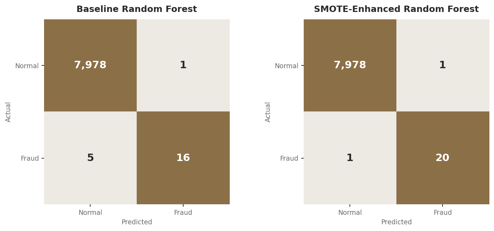

Handling a 384:1 Class Imbalance in Credit Card Fraud Detection
A Data Analytics Portfolio Project | July 2026
Improvement in fraud detection recall after applying SMOTE to a severely imbalanced dataset

Project Overview
A 60 second overview before the full report.
0.26%
of transactions were fraudulent
Just 104 fraud cases out of 39,999 credit card transactions, a class imbalance ratio of roughly 384 legitimate transactions for every 1 fraudulent one.
+19pts
recall improvement from SMOTE
The baseline Random Forest caught 76% of fraud cases in testing. After SMOTE-balancing the training data, the same model architecture caught 95%.
1 vs. 5
missed fraud cases (SMOTE vs. baseline)
Out of 21 fraud cases in the test set, the baseline model missed 5. The SMOTE-enhanced model missed only 1, with virtually no added false alarms.
Approach
Trained a baseline Random Forest on severely imbalanced transaction data, then applied SMOTE (Synthetic Minority Over-sampling Technique) to synthetically balance the training set before retraining an identical model architecture, isolating the effect of class balancing alone.
Tools & Context
Built as part of a graduate-level data science coursework portfolio, with an automated multi-page PDF reporting pipeline.
Fraud detection is one of the clearest examples of a problem where accuracy, the most intuitive way to measure a model, is actively misleading. A model that simply predicted "not fraud" for every single transaction in this dataset would be 99.74% accurate, and completely useless. This project set out to demonstrate why: and more importantly, how to fix it.
Using a dataset of 39,999 credit card transactions with only 104 confirmed fraud cases (a 0.26% fraud rate), this analysis trains a baseline Random Forest classifier, then applies SMOTE (Synthetic Minority Over-sampling Technique) to address the class imbalance directly, and measures exactly how much that intervention improves the model's ability to catch fraud.
The goal wasn't just to build an accurate-looking model, but to build one that is actually useful for its real purpose: catching the fraudulent transactions that matter, without simply predicting the majority class by default.
Of the 39,999 transactions in this dataset, only 104 (0.26%) were fraudulent, while 39,895 (99.74%) were legitimate. This is an extreme class imbalance: for every fraudulent transaction, there are roughly 384 legitimate ones. When a classification algorithm is trained on data like this without any adjustment, it naturally learns that predicting "not fraud" is almost always the safe, high-accuracy bet.
Random Forest and most other classifiers optimize for overall predictive accuracy by default. On a dataset this imbalanced, a model can achieve near-perfect accuracy while still missing a substantial share of the minority class (the fraud cases) entirely, because those cases contribute so little to the overall error signal during training. This is precisely the failure mode this project set out to measure and correct.
A baseline Random Forest classifier (100 trees, default class weighting) was trained on the imbalanced training data (31,916 legitimate transactions vs. just 83 fraud cases) and evaluated on a held-out, stratified test set of 8,000 transactions.
The baseline model achieved 100% overall accuracy and 94% precision on fraud predictions, meaning that when it flagged a transaction as fraud, it was usually right. But its recall on fraud cases was only 76%, correctly catching 16 of the 21 fraud cases in the test set and missing 5. In a real fraud detection system, those 5 missed cases represent real financial losses that went undetected.
Rather than simply duplicating existing fraud examples (which risks overfitting to those exact cases), SMOTE generates new, synthetic fraud examples by interpolating between existing minority-class data points and their nearest neighbors in feature space. This gives the model a richer, more balanced view of what fraud "looks like" during training, without fabricating unrealistic data.
SMOTE was applied only to the training set (31,916 legitimate vs. 83 fraud cases), expanding it to a perfectly balanced 31,916 vs. 31,916 before retraining an identical Random Forest architecture. The test set was left untouched and imbalanced, exactly as real-world fraud would actually be distributed, to ensure an honest evaluation.

With an identical model architecture, changing only the class balance of the training data, fraud recall jumped from 76% to 95%, catching 20 of 21 fraud cases in testing and missing just 1. Precision held essentially steady (94% to 95%), and the false positive count stayed effectively flat (increasing by exactly 0 legitimate transactions misclassified, per the confusion matrices above). F1-score for the fraud class improved from 0.84 to 0.95, an 11-point gain that reflects a genuinely better balance of precision and recall, not a trade-off between them.
In fraud detection, false negatives (missed fraud) and false positives (legitimate transactions incorrectly flagged) carry very different costs. A missed fraud case can mean direct financial loss and a damaged customer relationship. A false positive typically means a declined transaction and customer friction, annoying, but far less costly than letting fraud through.
This is exactly why recall, not accuracy, is the metric that matters most for this problem. The SMOTE-enhanced model's near-flat false positive rate alongside a substantial recall improvement represents close to a best-case outcome: catching significantly more fraud without meaningfully increasing customer friction. In a production setting, the exact operating point (how aggressively to flag borderline cases) would ultimately be tuned based on a business's specific cost structure for missed fraud versus false alarms.
Like all analyses, this project has limitations worth understanding when interpreting the findings:
With only 104 total fraud cases (21 in the test set), each individual prediction carries significant weight in the reported metrics. A single additional missed or caught case shifts recall by roughly 5 percentage points. Results should be interpreted as directionally strong evidence for SMOTE's effectiveness rather than a precise, stable percentage that would hold at larger sample sizes.
SMOTE generates synthetic examples by interpolating in feature space, which assumes that the space between two real fraud cases is itself a realistic representation of fraud. This assumption generally holds well for numeric, PCA-transformed features like those in this dataset, but is a simplification worth noting.
This analysis compares two models at their default classification threshold (0.5). A production deployment would likely tune the decision threshold explicitly based on the business's real cost ratio between false positives and false negatives, potentially improving results further in either direction.
On a dataset where fraud represented just 0.26% of transactions, applying SMOTE to balance the training data improved fraud recall from 76% to 95%, while precision remained essentially unchanged. This demonstrates that the choice of how to handle class imbalance, not just which algorithm to use, can be the single highest-leverage decision in an imbalanced classification problem.
Severe class imbalance shows up constantly in real-world business problems beyond fraud: rare disease diagnosis, equipment failure prediction, customer churn among a loyal base, and manufacturing defect detection all share this same structure. The core lesson here, that standard accuracy metrics actively mislead under imbalance and that techniques like SMOTE offer a meaningful, measurable fix, applies well beyond this specific dataset.
39,999 credit card transactions with 30 numeric, PCA-transformed features plus a binary fraud label. 104 transactions (0.26%) were labeled fraudulent, and 39,895 (99.74%) were legitimate.
All data processing and modeling was conducted in Python using pandas, scikit-learn, and imbalanced-learn, structured as a three-part pipeline:
An 80/20 stratified split (stratified on the fraud label) was used to preserve the same 0.26% fraud rate in both the training and test sets. SMOTE was applied only after this split, and only to the training data, so the test set remained untouched and realistically imbalanced for an honest evaluation.
Both the baseline and SMOTE-enhanced models used an identical Random Forest architecture (100 estimators, default scikit-learn hyperparameters otherwise), so that any performance difference between the two can be attributed specifically to the class balancing technique rather than to differing model complexity.
| Model | Fraud Precision | Fraud Recall | Fraud F1 | Fraud Cases Missed |
|---|---|---|---|---|
| Baseline Random Forest | 0.94 | 0.76 | 0.84 | 5 of 21 |
| SMOTE-Enhanced Random Forest | 0.95 | 0.95 | 0.95 | 1 of 21 |
Results were compiled into an automated three-page PDF report (side-by-side confusion matrices, a full metric comparison table, and a written summary of improvements), generated programmatically to support quick sharing with non-technical stakeholders.